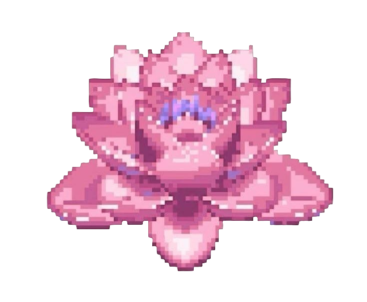

Японский чай
Нежный магазин японского чая,
где традиции встречаются с эстетикой
сакуры. Выбирай любимый вкус и устраивай маленькую чайную церемонию дома.
Японский чай для спокойных вечеров и красивых моментов.
О нас
Sakura Tea — это небольшой магазин японского чая.
созданный для любителей уютных вечеров и красивой японской культуры.
Мы предлагаем разные виды чая, которые подойдут как для спокойного утра,
так и для приятной встречи с друзьями.
В нашем магазине можно найти матчу, сенчу и чай с ароматом японской сакуры.
Мы стараемся выбирать качественные продукты и красиво оформлять каждый заказ.

Матча Сакура
Нежный чай для спокойного утра и приятного начала дня.

Сакура Ханами
Лёгкий цветочный аромат, который напоминает о весенней Японии.
Сенча Премиум
Классический японский чай для уютных вечеров и тёплых встреч.